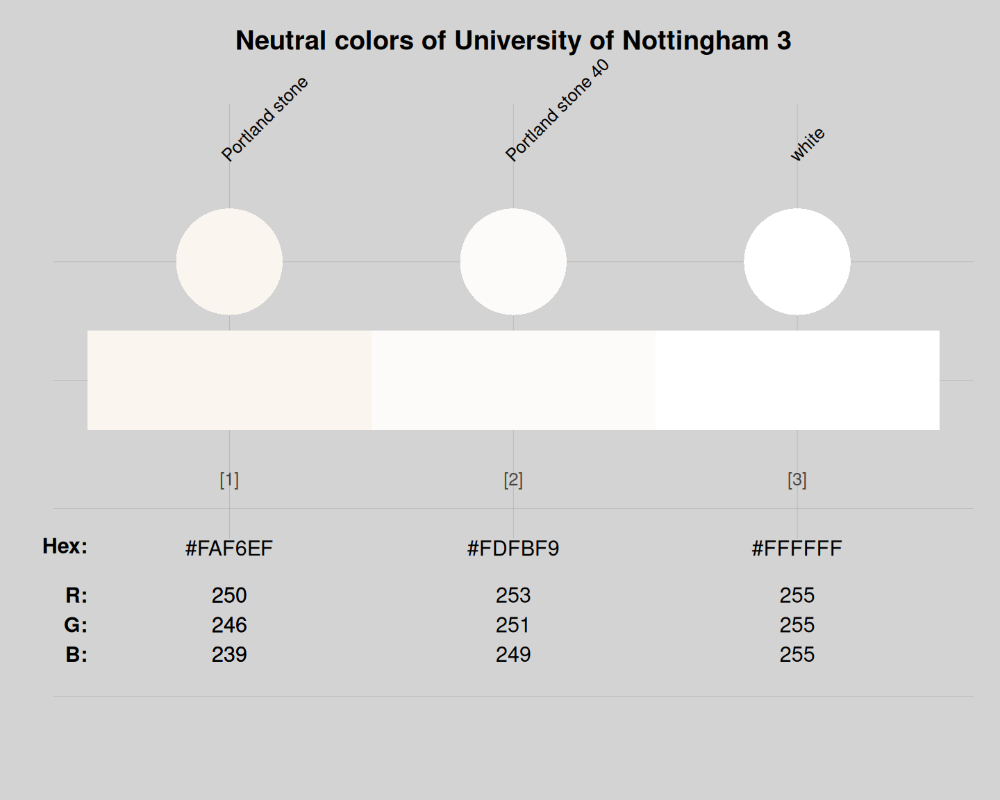

nottingham_3 provides three neutral colours
of the University of Nottingham, England/UK.
Source
Colour definitions are based on the UoN's Colour guidelines.
Details
To accompany the primary Nottingham blue (see nottingham_1)
and the supporting palette (see nottingham_2)
a small neutral palette can be used.
This is made up of a light/warm grey and "white".
The neutral colours of nottingham_3 can be used on all designs
where appropriate, do not count towards the maximum two supporting colours per design and
are permitted to make up over half of the designed asset,
as these would be best used for text (white only) or backgrounds.
The neutral color Portland stone is defined as
CMYK: 3, 3, 8, 0, RGB: R250, G246, B239, or HEX: "#FAF6EF".
Portland stone has a 40
to create more accessible designs.
More information on accessibility and permissible combinations can be found in the ‘digital backgrounds’ section of UoN's Colour guidelines.
nottingham_2 uses the HEX color definitions.
See also
nottingham_1 for primary colours of the University of Nottingham;
nottingham_2 for supporting colours of the University of Nottingham;
seecol for viewing and comparing colour palettes;
usecol for using colour palettes;
simcol for finding similar colours;
newpal for defining new colour palettes;
grepal for finding named colours.
Other UK university color palettes:
nottingham_1,
nottingham_2
Examples
nottingham_3
#> Portland stone Portland stone 40 white
#> "#FAF6EF" "#FDFBF9" "#FFFFFF"
unikn::seecol(nottingham_3, col_bg = "lightgrey",
main = "Neutral colors of University of Nottingham 3")
